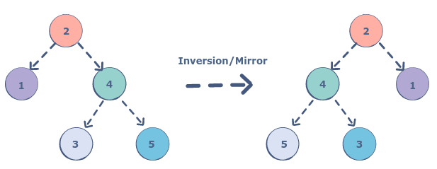

Coding interviews have never been popular in the programming community; I mean, they are prevalent, since many companies still use them to filter candidates, but they are vastly unpopular in the community because people find them too hard, too unfair, too unrepresentative of reality and so on. There are viral stories all around - like when the creator of Homebrew failed Google's interviews [1].
In this post I want to make the case that coding interviews aren't all that bad. They're certainly not a perfect way to filter candidates to SWE positions, but they are among the best tools we've got. I've been interviewing folks for SWE positions for almost 20 years now, and I regularly review hiring packets in which all of the candidate's interviews are laid out with their results and recommendations.
First, what do I mean by "coding interviews"? Typically, writing some moderate amount of code (in the order of 50 lines) throughout the interview, involving nothing more than simple and fundamental data structures. Linked lists, graphs, arrays, binary search trees at most. Many interviews will also examine one or more horizontal aspects like recursion, parsing simple data, and discussing the runtime and storage complexity and performance of simple algorithms.
To reiterate, the best coding interviews are relatively simple questions that don't require deep familiarity with advanced data structres like skip-lists or quad-trees, but do require a good understanding of programming fundamentals. I don't ask candidates to invert binary trees, but whoever does ask this question most likely doesn't ask it because it is relevant to their work projects; rather, they ask it because it probes the candidate's understanding of recursion, basic data structures, debugging and careful treatment of pointers or references (depending on the language).
Objectivity
The reason I prefer asking coding questions is because I firmly believe they are the most objective way to evaluate candidates. Solving a coding question removes so many subjective factors, especially related to the candidate's demographics and background, and the majority of the common interview biases.
A good way to think about this is to consider one of the alternatives commonly proposed to coding interviews: just talk to the candidate, ask about their background, their past job, the problems they were solving, etc. I actually have an educational story related to this, from my own experience.
Many years ago in a company far away, I was just starting to interview full-time candidates (before that I only had experience interviewing interns). In that company, we would do 90-minute interviews in pairs, and I was paired with an experienced engineer. The candidate was amazing at talking about themselves and after 20 minutes I was convinced they should be accepted; my experienced partner, however, calmly proceeded to asking a relatively simple technical question (this was a HW design interview and the question had to do with designing a basic low-pass filter). The candidate was immediately lost and fumbled for an hour. I remember feeling shocked; how is it possible that someone obviously so good can't do something so basic?
I keep encountering a variation of this scenario all the time, to this day, but I'm rarely surprised any more. I learned that just talking to candidates is a sure way to get an extremely biased view of their skills. I do think that in a slate of 4-5 interviews it's important for one of them to be more personal where the interviewer gets to know the candidate and tries to assess if they are pleasant to work with. But the majority of the interviews have to objective and technical, IMO.
Take-home projects
Another commonly mentioned alternative to coding interviews is take-home projects, where the candidates get a sizable assignment to complete at home; this assignment can take on the order of 2-20 hours and is meant to evaluate the candidate on a much more realistic project than a 45-min coding interview.
There are at least three major challenges with this approach.
First of all, candidates don't like these - since they may take a long time to finish, and this doesn't scale well when you're applying to multiple jobs. Many strong candidates will be put off by the requirement to spend multiple hours on a programming assignment; since finding strong candidates is one of the biggest challenges companies face, this is an important factor.
Second, these assignments are a burden on the hiring team as well, since they take a long time to prepare and evaluate. While this may not be a problem for "one off" hiring quests, anyone who's familiar with the plight of SWEs who have to spend lots of time on interviews and hiring while also doing their daily jobs because the company is in a growth spurt, will recognize this issue.
Third and most important - these assignments are very vulnerable to cheating, and cheating is absolutely rampant in the industry. These days it's easy to encounter cheating even on mainstream, open platforms like Reddit, not to mention dedicated services like LeetCode or "code for hire" services where candidates can buy solutions for money. This isn't a new problem, either. When I was toying with RentACoder 15 years ago the majority of projects I ended up doing were either homework or "do my work for me" assignments.
Now, coding questions are vulnerable to a kind of "cheating" as well - for example, you can probably find 95% of the questions Google asks on LeetCode these days, but this is very different IMHO. Sure, you can engorge yourself by reading hundreds of questions & answers on LeetCode, and come to the interview ready. But in my experience, when you're faced with an interview you're still on your own and the interviewer can typically ask tangential questions that will expose someone who just memorized the answers. Enforcement is much harder with take-home exercises.
Diversity
Lately I've seen a lot of discussion about how the way interviews are currently done is bad for diversity. The issue of diversity is very important for the industry, for sure. I agree that companies should be seeking ways to diversify their work force - and how to do this properly is a genuinely hard question that is an active area of academic research.
That said, IMHO coding interviews are a significantly more objective way to evaluate candidates from the diversity standpoint. The "tell me about yourself" style of interviews is extremely subjective and open to bias. What better way to activate the automatic rapport people feel for someone with background similar to theirs, and the ingrained lizard-brain antagonism to anyone different?
"Take-home projects" are much more subjective too, because guess what - the cheating is much more available for someone with the money already. As recent exposés demonstrate, when important life-long goals are in play, people will do whatever in their power to get ahead. Folks from a poor background looking for their first high-paying job will not be in a position to pop a $1,000 for some off-shore programmer to solve their take-home question, but someone else would.
Conclusion
Hopefully this post clarifies why I think that coding interviews, while not perfect, are an important objective evaluation technique for hiring SWEs. I'm not saying that coding interviews should be the only criterion, only that they are an important signal that should not be dropped from any hiring process.
To paraphrase a well-worn Churchill quote:
Indeed it has been said that a coding interview is the worst form of interview except for all those other forms that have been tried from time to time
All of this is IMHO, of course, and I only speak for myself here.
Update (2022-03-29): shortly after this post went out, MIT published an article on reinstating standardized scores (SAT/ACT) as one of criteria for admission. I think it's a very well-written, evidence-driven and thoughtful article. They explicitly state that such tests, while not perfect, provide a more objective criteria for under-represented groups' admissions than other criteria in use. They also provide evidence on how these tests are predictive of students' success in MIT. I found it to be a very nice parallel for this post.
| [1] | Clearly, this could be a problem in the process but (1) we don't know the full details of the case here and (2) this is a very rare occurrence compared to the tens of thousands of SWE interviews that are conducted every day. The odds of J-random-SWE-candidate being the primary author of well-known SW are extremely low, and the vast majority of these candidates will easily solve typical coding questions. The remaining probability of P(fail | eminent programmer) is negligible. |